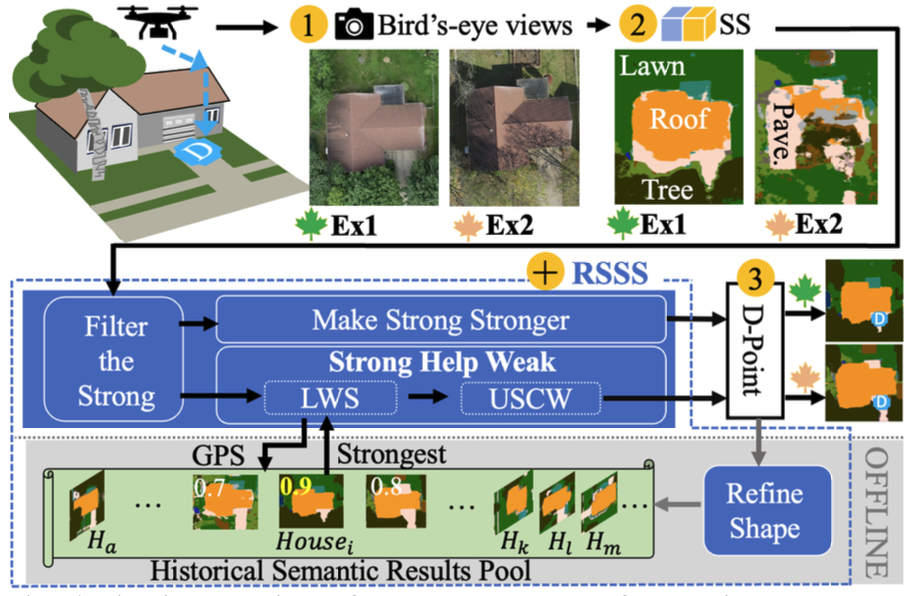
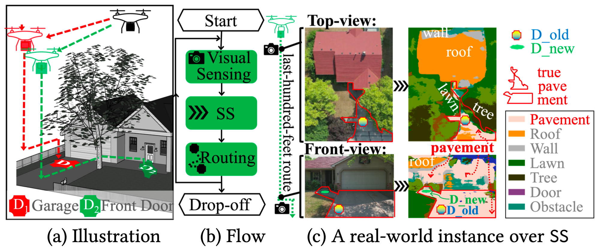
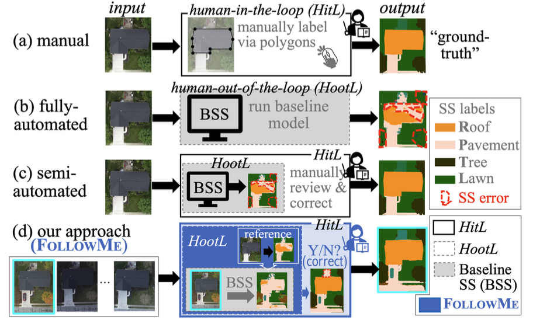
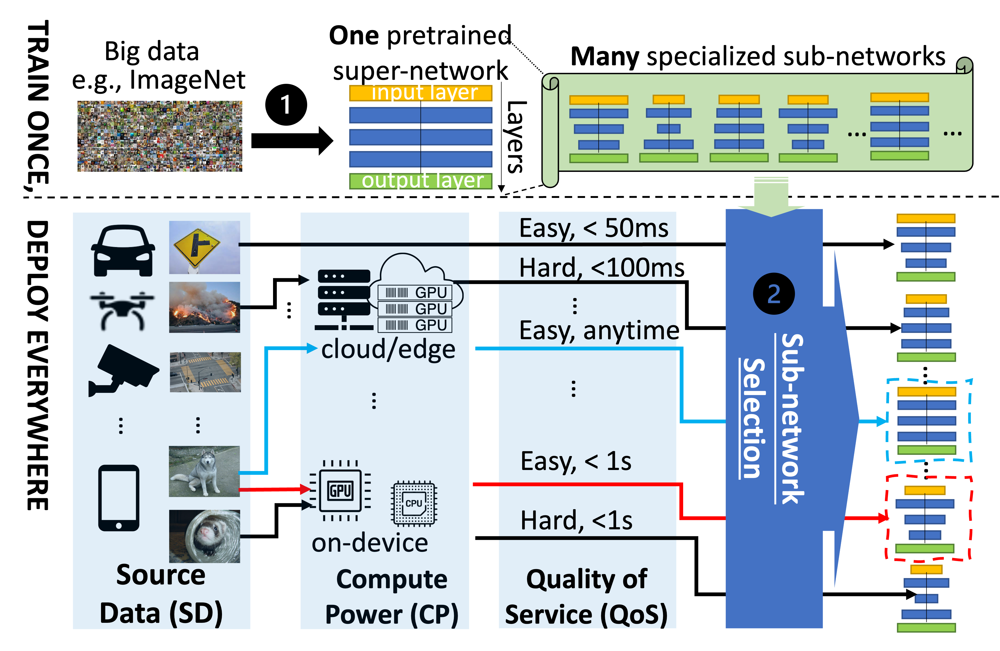

Shengqing Xia
Ph.D. Candidate in Computer Science
Purdue University
West Lafayette, IN
Email · Google Scholar · CV
I am seeking tenure-track faculty positions in Computer Science, Robotics, and related areas.
Efficient and Reliable Visual Perception for Real-World Robot Autonomy
I am a Ph.D. candidate in Computer Science at Purdue University, advised by Prof. Chunyi Peng. My research focuses on robust and efficient visual perception for autonomous robots, with a particular emphasis on real-world drone autonomy.
My research aims to bridge the gap between state-of-the-art computer vision models and their practical deployment in complex physical environments. By incorporating physical-world knowledge and geometric constraints into existing vision models, I develop efficient and reliable approaches to semantic and depth perception without relying heavily on costly model retraining. I validate these techniques through real-world drone experiments, emphasizing robustness, computational efficiency, and real-time performance.
Previously, I received an M.S. in Data Science from Columbia University and a B.E. from Wuhan University.
Research Highlights
AnchorDepth · Fast Metric Depth Estimation with Anchors for Drones

Accurate metric depth estimation is essential for safe drone navigation, yet existing single-image depth estimation (SIDE) methods often suffer from scale ambiguity and temporal inconsistency. On the other hand, multi-view reconstruction methods can recover consistent geometric structure but introduce computational overhead that limits real-time deployment. AnchorDepth combines the efficiency of SIDE with the consistency of geometric reasoning by exploiting scale changes in stationary objects with regular geometric structures as anchors to recover metric scale from relative depth predictions. This enables efficient and temporally consistent metric depth estimation across diverse drone trajectories, including flying along streets, approaching buildings, and vertical descent.
IEEE/RSJ IROS 2026RSSS · Robust Structural Semantic Segmentation for Autonomous Drone Delivery to Door

Semantic segmentation models often struggle under changing environmental conditions, such as variations in seasons, weather, and illumination. RSSS addresses this challenge through a “Strong Helps Weak” framework that leverages reliable semantic predictions from favorable conditions to refine weaker predictions under challenging environments. By exploiting the structural consistency of houses and establishing robust cross-view correspondences, RSSS improves task-relevant semantic understanding without requiring model retraining, enabling more reliable autonomous drone delivery across diverse environmental conditions.
IEEE/RSJ IROS 2025SSS · Towards Autonomous Drone Delivery to Your Door Over House-Aware Semantics

Autonomous drone delivery requires accurately identifying task-relevant regions, such as rooftops, driveways, and garage locations. However, conventional semantic segmentation methods often overlook the structural relationships among these regions. SSS addresses this limitation by incorporating prior knowledge of common house layouts to refine task-critical semantic boundaries and leveraging cross-view consistency to reduce redundant computation. This enables more reliable and efficient delivery-point localization without retraining existing segmentation models. The system was validated through real-world drone delivery experiments.
We were honored to receive the Best Demo Award at ACM HotMobile 2024.
Other Publications
Depth4VTOL · Precise Depth Estimation for Vertical Take-off and Landing UAVs

Safe drone navigation requires accurate metric depth estimation, yet conventional multi-view reconstruction methods can be computationally expensive, particularly during vertical flight with limited viewpoint diversity. Depth4VTOL exploits predictable changes in the apparent scale of rooftops during vertical motion to recover metric distances from relative depth predictions, enabling efficient depth estimation at 12.4 fps.
ACM MobiCom 2026 · ImmerCom WorkshopFollowMe · Efficient Image Annotation Across Environments

Building on our prior work on robust semantic understanding across environments (RSSS), FollowMe focuses on efficient image annotation. It leverages high-quality annotations from one environment to automatically annotate images of the same physical scene under different times, seasons, and weather conditions, requiring only lightweight human review and correction. FollowMe reduces human effort by 94% while maintaining an average F1 score of 0.9.
ACM MobiCom 2026 · HumanSys WorkshopA4AWD · Aerial Weed Detection over Residential Lawns

A4AWD targets UAV-based weed detection over residential lawns, where weeds appear extremely small and visually similar to surrounding turfgrass. It introduces a lightweight inference-time augmentation tailored for this challenging green-on-green aerial setting and was evaluated over 165 residential houses.
ICUAS 2026OPA · One-Predict-All for Efficient Deployment

Instead of training a specialized DNN for each deployment scenario, OPA uses one shallow subnet to test the water. The shallow subnet helps accelerate the search for an appropriate deep subnet, enabling more efficient DNN deployment across diverse use scenarios.
IEEE INFOCOM 2023VPPlus · Video Processing for Live Video Analytics at the Edge
VPPlus compresses video content live streamed from the device to the edge while preserving the accuracy and timeliness of video analytics. It enlarges the configuration space available for on-device processing and automatically generates feedback to guide joint tuning across more than eight parameters, such as brightness and saturation.
IEEE/ACM IWQoS 2022Teaching Experience
CS 422 — Computer Networks
CS 422 — Computer Networks (Spring 2025); CS 242 — Introduction to Data Science (Fall 2024, Fall 2022); CS 38003 — Python Programming (Spring 2022); CS 490 — Introduction to Data Visualization (Fall 2021).
CS 197 — Freshman Honors Seminar; CS 39000-ARC — AI, Robotics, & Community.
Selected Recognition
Purdue Teaching Fellowship · 2025
ACM HotMobile Best Demo Award · 2024
IEEE RAS Travel Grant · 2026 · MobiCom N2Women Student Travel Grant · 2026 · ImmerCom Travel Grant · 2026